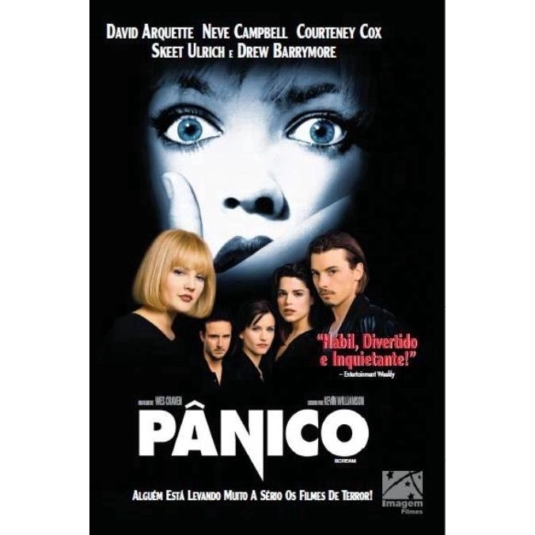

Ghostface (br: Cara de Fantasma), é o antagonista na trilogia de Pânico. Ele é um assassino em série que sempre tenta matar Sidney Prescott e seus amigos. Seu modus operandi é ligar para a vítima fazendo perguntas sobre filme de terror. Se errar a pergunta, ele ataca e mata a pessoa esfaqueando-a por completo.
Tendo como sua primeira aparicão na franquia, Pânico, de 1996, com os atores, Skeet Ulrich e Matthew Lillard dando vida aos antagonistas.
